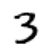
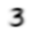
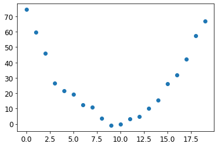
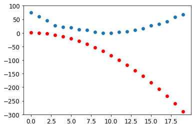
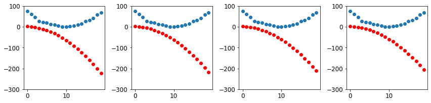
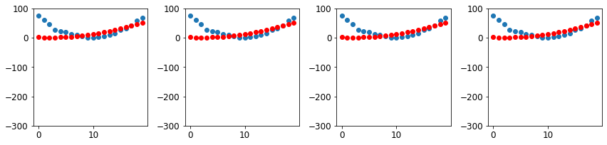
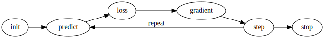
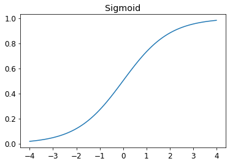

Notes on fastai Book Ch. 4
ai
fastai
notes
pytorch
Chapter 4 covers broadcasting, stochastic gradient descent, the MNIST loss function, and the sigmoid activation functions.
- Tenacity and Deep Learning
- The Foundations of Computer Vision
- Pixels
- Pixel Similarity
- Computing Metrics Using Broadcasting
- Stochastic Gradient Descent
- The MNIST Loss Function
- Putting It All Together
- Adding a Nonlinearity
- References
Tenacity and Deep Learning
- Deep learning practitioners need to be tenacious
- Only a handful of researchers kept trying to make neural networks work through the 1990s and 2000s.
- Yann Lecun, Yoshua Bengio, and Geoffrey Hinton were not awarded the Turing Award until 2018
- Academic Papers for neural networks were rejected by top journals and conferences, despite showing dramatically better results than anything previously published
- Jurgen Schmidhuber
- pioneered many important ideas
- worked with his student Sepp Hochreiter on the long short-term memory (LSTM) architecture
- LSTMs are now widely used for speech recognition and other text modelling tasks
- Paul Werbos
- Invented backpropagation for neural networks in 1974
- considered the most important foundation of modern AI
- Invented backpropagation for neural networks in 1974
The Foundations of Computer Vision
- MNIST Database
- contains images of handwritten digits, collected by the National Institute of Standards and Technology
- created in 1998
- LeNet-5
- A convolutional neural network structure proposed by Yann Lecun and his colleagues
- Demonstrated the first practically useful recognition of handwritten digit sequences in 1998
- One of the most important breakthroughs in the history of AI
Pixels
MNIST_SAMPLE
- A sample of the famous MNIST dataset consisting of handwritten digits.
- contains training data for the digits
3and7 - images are in 1-dimensional grayscale format
- already split into training and validation sets
from fastai.vision.all import *
from fastbook import *
matplotlib.rc('image', cmap='Greys')print(URLs.MNIST_SAMPLE)
path = untar_data(URLs.MNIST_SAMPLE)
print(path)https://s3.amazonaws.com/fast-ai-sample/mnist_sample.tgz
/home/innom-dt/.fastai/data/mnist_sample# Set base path to mnist_sample directory
Path.BASE_PATH = path# A custom fastai method that returns the contents of path as a list
path.ls()(#3) [Path('labels.csv'),Path('train'),Path('valid')]fastcore L Class
- https://fastcore.fast.ai/foundation.html#L
- Behaves like a list of
itemsbut can also index with list of indices or masks - Displays the number of items before printing the items
python type(path.ls()) text fastcore.foundation.L |
|---|
python (path/'train').ls() |
threes = (path/'train'/'3').ls().sorted()
sevens = (path/'train'/'7').ls().sorted()
threes(#6131) [Path('train/3/10.png'),Path('train/3/10000.png'),Path('train/3/10011.png'),Path('train/3/10031.png'),Path('train/3/10034.png'),Path('train/3/10042.png'),Path('train/3/10052.png'),Path('train/3/1007.png'),Path('train/3/10074.png'),Path('train/3/10091.png')...]im3_path = threes[1]
print(im3_path)
im3 = Image.open(im3_path)
im3/home/innom-dt/.fastai/data/mnist_sample/train/3/10000.png
PIL Image Module
- https://pillow.readthedocs.io/en/stable/reference/Image.html
- provides a class with the same name which is used to represent a PIL image
- provides a number of factory functions, including functions to load images from files, and to create new images
print(type(im3))
print(im3.size)<class 'PIL.PngImagePlugin.PngImageFile'>
(28, 28)# Slice of the image from index 4 up to, but not including, index 10
array(im3)[4:10,4:10]array([[ 0, 0, 0, 0, 0, 0],
[ 0, 0, 0, 0, 0, 29],
[ 0, 0, 0, 48, 166, 224],
[ 0, 93, 244, 249, 253, 187],
[ 0, 107, 253, 253, 230, 48],
[ 0, 3, 20, 20, 15, 0]], dtype=uint8)NumPy Arrays and PyTorch Tensors
- NumPy
- the most widely used library for scientific and numeric programming in Python
- does not support using GPUs or calculating gradients
- Python is slow compared to many languages
- anything fast in Python is likely to be a wrapper for a compiled object written and optimized in another language like C
- NumPy arrays and PyTorch tensors can finish computations many thousands of times than using pure Python
- NumPy array
- a multidimensional table of data
- all items are the same type
- can use any type, including arrays, for the array type
- simple types are stored as a compact C data structure in memory
- PyTorch tensor
- nearly identical to NumPy arrays
- can only use a single basic numeric type for all elements
- not as flexible as a genuine array of arrays
- must always be a regularly shaped multi-dimensional rectangular structure
- cannot be jagged
- must always be a regularly shaped multi-dimensional rectangular structure
- supports using GPUs
- PyTorch can automatically calculate derivatives of operations performed with tensors
- impossible to do deep learning without this capability
- perform operations directly on arrays or tensors as much as possible instead of using loops
data = [[1,2,3],[4,5,6]]
arr = array (data)
tns = tensor(data)python arr # numpy text array([[1, 2, 3], [4, 5, 6]]) |
|---|
python tns # pytorch |
# select a row
tns[1]tensor([4, 5, 6])# select a column
tns[:,1]tensor([2, 5])# select a slice
tns[1,1:3]tensor([5, 6])# Perform element-wise addition
tns+1tensor([[2, 3, 4],
[5, 6, 7]])python tns.type() text 'torch.LongTensor' |
|---|
python # Perform element-wise multiplication tns*1.5 |
| ### NumPy Array Objects |
| * https://numpy.org/doc/stable/reference/arrays.html * an N-dimensional array type, the ndarray, which describes a collection of “items” of the same type |
| #### numpy.array function |
| * https://numpy.org/doc/stable/reference/generated/numpy.array.html * creates an array |
print(type(array(im3)[4:10,4:10]))
array<class 'numpy.ndarray'>
<function numpy.array>python print(array(im3)[4:10,4:10][0].data) print(array(im3)[4:10,4:10][0].dtype) |
|---|
python print(type(tensor(im3)[4:10,4:10][0])) tensor |
print(tensor(im3)[4:10,4:10][0].data)
print(tensor(im3)[4:10,4:10][0].dtype)tensor([0, 0, 0, 0, 0, 0], dtype=torch.uint8)
torch.uint8Pandas DataFrame
- https://pandas.pydata.org/docs/reference/api/pandas.DataFrame.html
- Two-dimensional, size-mutable, potentially heterogeneous tabular data
# Full Image
pd.DataFrame(tensor(im3))| 0 | 1 | 2 | 3 | 4 | 5 | 6 | 7 | 8 | 9 | 10 | 11 | 12 | 13 | 14 | 15 | 16 | 17 | 18 | 19 | 20 | 21 | 22 | 23 | 24 | 25 | 26 | 27 | |
|---|---|---|---|---|---|---|---|---|---|---|---|---|---|---|---|---|---|---|---|---|---|---|---|---|---|---|---|---|
| 0 | 0 | 0 | 0 | 0 | 0 | 0 | 0 | 0 | 0 | 0 | 0 | 0 | 0 | 0 | 0 | 0 | 0 | 0 | 0 | 0 | 0 | 0 | 0 | 0 | 0 | 0 | 0 | 0 |
| 1 | 0 | 0 | 0 | 0 | 0 | 0 | 0 | 0 | 0 | 0 | 0 | 0 | 0 | 0 | 0 | 0 | 0 | 0 | 0 | 0 | 0 | 0 | 0 | 0 | 0 | 0 | 0 | 0 |
| 2 | 0 | 0 | 0 | 0 | 0 | 0 | 0 | 0 | 0 | 0 | 0 | 0 | 0 | 0 | 0 | 0 | 0 | 0 | 0 | 0 | 0 | 0 | 0 | 0 | 0 | 0 | 0 | 0 |
| 3 | 0 | 0 | 0 | 0 | 0 | 0 | 0 | 0 | 0 | 0 | 0 | 0 | 0 | 0 | 0 | 0 | 0 | 0 | 0 | 0 | 0 | 0 | 0 | 0 | 0 | 0 | 0 | 0 |
| 4 | 0 | 0 | 0 | 0 | 0 | 0 | 0 | 0 | 0 | 0 | 0 | 0 | 0 | 0 | 0 | 0 | 0 | 0 | 0 | 0 | 0 | 0 | 0 | 0 | 0 | 0 | 0 | 0 |
| 5 | 0 | 0 | 0 | 0 | 0 | 0 | 0 | 0 | 0 | 29 | 150 | 195 | 254 | 255 | 254 | 176 | 193 | 150 | 96 | 0 | 0 | 0 | 0 | 0 | 0 | 0 | 0 | 0 |
| 6 | 0 | 0 | 0 | 0 | 0 | 0 | 0 | 48 | 166 | 224 | 253 | 253 | 234 | 196 | 253 | 253 | 253 | 253 | 233 | 0 | 0 | 0 | 0 | 0 | 0 | 0 | 0 | 0 |
| 7 | 0 | 0 | 0 | 0 | 0 | 93 | 244 | 249 | 253 | 187 | 46 | 10 | 8 | 4 | 10 | 194 | 253 | 253 | 233 | 0 | 0 | 0 | 0 | 0 | 0 | 0 | 0 | 0 |
| 8 | 0 | 0 | 0 | 0 | 0 | 107 | 253 | 253 | 230 | 48 | 0 | 0 | 0 | 0 | 0 | 192 | 253 | 253 | 156 | 0 | 0 | 0 | 0 | 0 | 0 | 0 | 0 | 0 |
| 9 | 0 | 0 | 0 | 0 | 0 | 3 | 20 | 20 | 15 | 0 | 0 | 0 | 0 | 0 | 43 | 224 | 253 | 245 | 74 | 0 | 0 | 0 | 0 | 0 | 0 | 0 | 0 | 0 |
| 10 | 0 | 0 | 0 | 0 | 0 | 0 | 0 | 0 | 0 | 0 | 0 | 0 | 0 | 0 | 249 | 253 | 245 | 126 | 0 | 0 | 0 | 0 | 0 | 0 | 0 | 0 | 0 | 0 |
| 11 | 0 | 0 | 0 | 0 | 0 | 0 | 0 | 0 | 0 | 0 | 0 | 14 | 101 | 223 | 253 | 248 | 124 | 0 | 0 | 0 | 0 | 0 | 0 | 0 | 0 | 0 | 0 | 0 |
| 12 | 0 | 0 | 0 | 0 | 0 | 0 | 0 | 0 | 0 | 11 | 166 | 239 | 253 | 253 | 253 | 187 | 30 | 0 | 0 | 0 | 0 | 0 | 0 | 0 | 0 | 0 | 0 | 0 |
| 13 | 0 | 0 | 0 | 0 | 0 | 0 | 0 | 0 | 0 | 16 | 248 | 250 | 253 | 253 | 253 | 253 | 232 | 213 | 111 | 2 | 0 | 0 | 0 | 0 | 0 | 0 | 0 | 0 |
| 14 | 0 | 0 | 0 | 0 | 0 | 0 | 0 | 0 | 0 | 0 | 0 | 43 | 98 | 98 | 208 | 253 | 253 | 253 | 253 | 187 | 22 | 0 | 0 | 0 | 0 | 0 | 0 | 0 |
| 15 | 0 | 0 | 0 | 0 | 0 | 0 | 0 | 0 | 0 | 0 | 0 | 0 | 0 | 0 | 9 | 51 | 119 | 253 | 253 | 253 | 76 | 0 | 0 | 0 | 0 | 0 | 0 | 0 |
| 16 | 0 | 0 | 0 | 0 | 0 | 0 | 0 | 0 | 0 | 0 | 0 | 0 | 0 | 0 | 0 | 0 | 1 | 183 | 253 | 253 | 139 | 0 | 0 | 0 | 0 | 0 | 0 | 0 |
| 17 | 0 | 0 | 0 | 0 | 0 | 0 | 0 | 0 | 0 | 0 | 0 | 0 | 0 | 0 | 0 | 0 | 0 | 182 | 253 | 253 | 104 | 0 | 0 | 0 | 0 | 0 | 0 | 0 |
| 18 | 0 | 0 | 0 | 0 | 0 | 0 | 0 | 0 | 0 | 0 | 0 | 0 | 0 | 0 | 0 | 0 | 85 | 249 | 253 | 253 | 36 | 0 | 0 | 0 | 0 | 0 | 0 | 0 |
| 19 | 0 | 0 | 0 | 0 | 0 | 0 | 0 | 0 | 0 | 0 | 0 | 0 | 0 | 0 | 0 | 60 | 214 | 253 | 253 | 173 | 11 | 0 | 0 | 0 | 0 | 0 | 0 | 0 |
| 20 | 0 | 0 | 0 | 0 | 0 | 0 | 0 | 0 | 0 | 0 | 0 | 0 | 0 | 0 | 98 | 247 | 253 | 253 | 226 | 9 | 0 | 0 | 0 | 0 | 0 | 0 | 0 | 0 |
| 21 | 0 | 0 | 0 | 0 | 0 | 0 | 0 | 0 | 0 | 0 | 0 | 0 | 42 | 150 | 252 | 253 | 253 | 233 | 53 | 0 | 0 | 0 | 0 | 0 | 0 | 0 | 0 | 0 |
| 22 | 0 | 0 | 0 | 0 | 0 | 0 | 42 | 115 | 42 | 60 | 115 | 159 | 240 | 253 | 253 | 250 | 175 | 25 | 0 | 0 | 0 | 0 | 0 | 0 | 0 | 0 | 0 | 0 |
| 23 | 0 | 0 | 0 | 0 | 0 | 0 | 187 | 253 | 253 | 253 | 253 | 253 | 253 | 253 | 197 | 86 | 0 | 0 | 0 | 0 | 0 | 0 | 0 | 0 | 0 | 0 | 0 | 0 |
| 24 | 0 | 0 | 0 | 0 | 0 | 0 | 103 | 253 | 253 | 253 | 253 | 253 | 232 | 67 | 1 | 0 | 0 | 0 | 0 | 0 | 0 | 0 | 0 | 0 | 0 | 0 | 0 | 0 |
| 25 | 0 | 0 | 0 | 0 | 0 | 0 | 0 | 0 | 0 | 0 | 0 | 0 | 0 | 0 | 0 | 0 | 0 | 0 | 0 | 0 | 0 | 0 | 0 | 0 | 0 | 0 | 0 | 0 |
| 26 | 0 | 0 | 0 | 0 | 0 | 0 | 0 | 0 | 0 | 0 | 0 | 0 | 0 | 0 | 0 | 0 | 0 | 0 | 0 | 0 | 0 | 0 | 0 | 0 | 0 | 0 | 0 | 0 |
| 27 | 0 | 0 | 0 | 0 | 0 | 0 | 0 | 0 | 0 | 0 | 0 | 0 | 0 | 0 | 0 | 0 | 0 | 0 | 0 | 0 | 0 | 0 | 0 | 0 | 0 | 0 | 0 | 0 |
tensor(im3).shapetorch.Size([28, 28])im3_t = tensor(im3)
# Create a pandas DataFrame from image slice
df = pd.DataFrame(im3_t[4:15,4:22])
# Set defined CSS-properties to each ``<td>`` HTML element within the given subset.
# Color-code the values using a gradient
df.style.set_properties(**{'font-size':'6pt'}).background_gradient('Greys')| 0 | 1 | 2 | 3 | 4 | 5 | 6 | 7 | 8 | 9 | 10 | 11 | 12 | 13 | 14 | 15 | 16 | 17 | |
|---|---|---|---|---|---|---|---|---|---|---|---|---|---|---|---|---|---|---|
| 0 | 0 | 0 | 0 | 0 | 0 | 0 | 0 | 0 | 0 | 0 | 0 | 0 | 0 | 0 | 0 | 0 | 0 | 0 |
| 1 | 0 | 0 | 0 | 0 | 0 | 29 | 150 | 195 | 254 | 255 | 254 | 176 | 193 | 150 | 96 | 0 | 0 | 0 |
| 2 | 0 | 0 | 0 | 48 | 166 | 224 | 253 | 253 | 234 | 196 | 253 | 253 | 253 | 253 | 233 | 0 | 0 | 0 |
| 3 | 0 | 93 | 244 | 249 | 253 | 187 | 46 | 10 | 8 | 4 | 10 | 194 | 253 | 253 | 233 | 0 | 0 | 0 |
| 4 | 0 | 107 | 253 | 253 | 230 | 48 | 0 | 0 | 0 | 0 | 0 | 192 | 253 | 253 | 156 | 0 | 0 | 0 |
| 5 | 0 | 3 | 20 | 20 | 15 | 0 | 0 | 0 | 0 | 0 | 43 | 224 | 253 | 245 | 74 | 0 | 0 | 0 |
| 6 | 0 | 0 | 0 | 0 | 0 | 0 | 0 | 0 | 0 | 0 | 249 | 253 | 245 | 126 | 0 | 0 | 0 | 0 |
| 7 | 0 | 0 | 0 | 0 | 0 | 0 | 0 | 14 | 101 | 223 | 253 | 248 | 124 | 0 | 0 | 0 | 0 | 0 |
| 8 | 0 | 0 | 0 | 0 | 0 | 11 | 166 | 239 | 253 | 253 | 253 | 187 | 30 | 0 | 0 | 0 | 0 | 0 |
| 9 | 0 | 0 | 0 | 0 | 0 | 16 | 248 | 250 | 253 | 253 | 253 | 253 | 232 | 213 | 111 | 2 | 0 | 0 |
| 10 | 0 | 0 | 0 | 0 | 0 | 0 | 0 | 43 | 98 | 98 | 208 | 253 | 253 | 253 | 253 | 187 | 22 | 0 |
Pixel Similarity
- Establish a baseline to compare against your model
- a simple model that you are confident should perform reasonably well
- should be simple to implement and easy to test
- helps indicate whether your super-fancy models are any good
Method
- Calculate the average values for each pixel location across all images for each digit
- This will generate a blurry image of the target digit
- Compare the values for each pixel location in a new image to the average
python # Store all images of the digit 7 in a list of tensors seven_tensors = [tensor(Image.open(o)) for o in sevens] # Store all iamges of the digit 3 in a list of tensors three_tensors = [tensor(Image.open(o)) for o in threes] len(three_tensors),len(seven_tensors) |
|---|
python show_image(three_tensors[1]);  |
| #### PyTorch Stack Function * https://pytorch.org/docs/stable/generated/torch.stack.html * Concatenates a sequence of tensors along a new dimension |
# Stack all images for each digit into a single tensor
# and scale pixel values from the range [0,255] to [0,1]
stacked_sevens = torch.stack(seven_tensors).float()/255
stacked_threes = torch.stack(three_tensors).float()/255
stacked_threes.shapetorch.Size([6131, 28, 28])python len(stacked_threes.shape) text 3 |
|---|
python stacked_threes.ndim |
# Calculate the mean values for each pixel location across all images of the digit 3
mean3 = stacked_threes.mean(0)
show_image(mean3);
python # Calculate the mean values for each pixel location across all images of the digit 7 mean7 = stacked_sevens.mean(0) show_image(mean7);  |
|---|
python # Pick a single image to compare to the average a_3 = stacked_threes[1] show_image(a_3);  |
# Calculate the Mean Absolute Error between the single image and the mean pixel values
dist_3_abs = (a_3 - mean3).abs().mean()
# Calculate the Root Mean Squared Error between the single image and the mean pixel values
dist_3_sqr = ((a_3 - mean3)**2).mean().sqrt()
print(f"MAE: {dist_3_abs}")
print(f"RMSE: {dist_3_sqr}")MAE: 0.11143654584884644
RMSE: 0.20208320021629333Khan Academy: Understanding Square Roots
python dist_7_abs = (a_3 - mean7).abs().mean() dist_7_sqr = ((a_3 - mean7)**2).mean().sqrt() print(f"MAE: {dist_7_abs}") print(f"RMSE: {dist_7_sqr}") |
|---|
python F |
| #### PyTorch l1_loss function * https://pytorch.org/docs/stable/generated/torch.nn.functional.l1_loss.html#torch.nn.functional.l1_loss * takes the mean element-wise absolute value difference |
| #### PyTorch mse_loss function * https://pytorch.org/docs/stable/generated/torch.nn.functional.mse_loss.html#torch.nn.functional.mse_loss * Measures the element-wise mean squared error * Penalizes bigger mistakes more heavily |
# Calculate the Mean Absolute Error aka L1 norm
print(F.l1_loss(a_3.float(),mean7))
# Calculate the Root Mean Squared Error aka L2 norm
print(F.mse_loss(a_3,mean7).sqrt())tensor(0.1586)
tensor(0.3021)Computing Metrics Using Broadcasting
- broadcasting
- automatically expanding a tensor with a smaller rank to have the same size one with a larger rank to perform an operation
- an important capability that makes tensor code much easier to write
- PyTorch does not allocate additional memory for broadcasting
- it does not actually create multiple copies of the smaller tensor
- PyTorch performs broadcast calculations in C on the CPU and CUDA on the GPU
- tens of thousands of times faster than pure Python
- up to millions of times faster on GPU
| ```python # Create tensors for the validation set for the digit 3 # and stack them into a single tensor valid_3_tens = torch.stack([tensor(Image.open(o)) for o in (path/‘valid’/‘3’).ls()]) # Scale pixel values from [0,255] to [0,1] valid_3_tens = valid_3_tens.float()/255 |
| # Create tensors for the validation set for the digit 7 # and stack them into a single tensor valid_7_tens = torch.stack([tensor(Image.open(o)) for o in (path/‘valid’/‘7’).ls()]) # Scale pixel values from [0,255] to [0,1] valid_7_tens = valid_7_tens.float()/255 |
| valid_3_tens.shape,valid_7_tens.shape |
# Calculate Mean Absolute Error using broadcasting
# Subtraction operation is performed using broadcasting
# Absolute Value operation is performed elementwise
# Mean operation is performed over the values indexed by the height and width axes
def mnist_distance(a,b): return (a-b).abs().mean((-1,-2))
# Calculate MAE for two single images
mnist_distance(a_3, mean3)tensor(0.1114)# Calculate MAE between a single image and a vector of images
valid_3_dist = mnist_distance(valid_3_tens, mean3)
valid_3_dist, valid_3_dist.shape(tensor([0.1422, 0.1230, 0.1055, ..., 0.1244, 0.1188, 0.1103]),
torch.Size([1010]))python tensor([1,2,3]) + tensor([1,1,1]) text tensor([2, 3, 4]) |
|---|
python (valid_3_tens-mean3).shape |
# Compare the MAE value between the single and the mean values for the digits 3 and 7
def is_3(x): return mnist_distance(x,mean3) < mnist_distance(x,mean7)python is_3(a_3), is_3(a_3).float() |
is_3(valid_3_tens)tensor([ True, True, True, ..., False, True, True])accuracy_3s = is_3(valid_3_tens).float() .mean()
accuracy_7s = (1 - is_3(valid_7_tens).float()).mean()
accuracy_3s,accuracy_7s,(accuracy_3s+accuracy_7s)/2(tensor(0.9168), tensor(0.9854), tensor(0.9511))python print(f"Correct 3s: {accuracy_3s * valid_3_tens.shape[0]:.0f}") print(f"Incorrect 3s: {(1 - accuracy_3s) * valid_3_tens.shape[0]:.0f}") |
print(f"Correct 7s: {accuracy_7s * valid_7_tens.shape[0]:.0f}")
print(f"Incorrect 7s: {(1 - accuracy_7s) * valid_7_tens.shape[0]:.0f}")Correct 7s: 1013
Incorrect 7s: 15Stochastic Gradient Descent
- the key to having a model that can improve
- need to represent a task such that their are weight assignments that can be evaluated and updated
- Sample function:
- assign a weight value to each pixel location
Xis the image represented as a vector- all of the rows are stacked up end to end into a single long line
Wcontains the weights for each pixel
def pr_eight(x,w) = (x*w).sum()
def f(x): return x**2plot_function
plot_function(f, 'x', 'x**2')
plot_function(f, 'x', 'x**2')
plt.scatter(-1.5, f(-1.5), color='red');
Calculating Gradients
- the gradients tell us how much we need to change each weight to make our model better
- \(\frac{rise}{run} = \frac{the \ change \ in \ value \ of \ the \ function}{the \ change \ in \ the \ value \ of \ the \ parameter}\)
- derivative of a function
- tells you how much a change in its parameters will change its result
- Khan Academy: Basic Derivatives
- when we know how our function will change, we know how to make it smaller
- the key to machine learning
- PyTorch is able to automatically compute the derivative of nearly any function
- The gradient only tells us the slope of the function
- it does not indicate exactly how far to adjust the parameters
- if the slope is large, more adjustments may be required
- if the slope is small, we may be close to the optimal value
Tensor.requires_grad
- https://pytorch.org/docs/stable/generated/torch.Tensor.requires_grad.html
- is
Trueif gradients need to be computed for the Tensor - here gradient refers to the value of a function’s derivative at a particular argument value
- The PyTorch API puts the focus onto the argument, not the function
xt = tensor(3.).requires_grad_()python yt = f(xt) yt |
| #### Tensor.grad_fn |
| * https://pytorch.org/tutorials/beginner/former_torchies/autograd_tutorial.html#tensors-that-track-history * references a function that has created a function |
yt.grad_fn<PowBackward0 at 0x7f91e90a6670>Tensor.backward()
- https://pytorch.org/docs/stable/generated/torch.Tensor.backward.html#torch.Tensor.backward
- Computes the gradient of current tensor w.r.t. graph leaves.
- uses the chain rule
- backward refers to backpropagation
- the process of calculating the derivative for each layer
yt.backward()The derivative of f(x) = x**2 is 2x, so the derivative at x=3 is 6
xt.gradtensor(6.)Derivatives should be 6, 8, 20
xt = tensor([3.,4.,10.]).requires_grad_()
xttensor([ 3., 4., 10.], requires_grad=True)| ```python def f(x): return (x**2).sum() |
|---|
python yt.backward() xt.grad |
| ### Stepping with a Learning Rate |
- nearly all approaches to updating model parameters start with multiplying the gradient by some small number called the learning rate - Learning rate is often a number between 0.001 and 0.1 - could be value - stepping: adjusting your model parameters - size of step is determined by the learning rate - picking a learning rate that is too small means more steps are needed to reach the optimal parameter values - picking a learning rate that is too big can result in the loss getting worse or bouncing around the same range of values |
| ### An End-to-End SGD Example - Steps to turn function into classifier 1. Initialize the weights - initialize parameters to random values 2. For each image, use these weights to predict whether it appears to be a 3 or a 7. 3. Based on these predictions, calculate how good the model is (it loss) - “testing the effectiveness of any current weight assignment in terms of actual performance” - need a function that will return a number that is small when performance is good - standard convention is to treat a small loss as good and a large loss as bad 4. Calculate the gradient, which measures for each weight how changing that weight would change the loss - use calculus to determine whether to increase or decrease individual weight values 5. Step (update) the weights based on that calculation 6. Go back to step 2 and repeat the process 7. Iterate until you decide to stop the training process - until either the model is good enough, the model accuracy starts to decrease or you don’t want to wait any longer |
| Scenario: build a model of how the speed of a rollercoaster changes over time |
| #### torch.arange() |
* https://pytorch.org/docs/stable/generated/torch.arange.html?highlight=arange#torch.arange * Returns a 1-D tensor of size \(\left\lceil \frac{\text{end} - \text{start}}{\text{step}} \right\rceil\) with values from the interval [start, end) taken with common difference step beginning from start. |
time = torch.arange(0,20).float();
print(time)tensor([ 0., 1., 2., 3., 4., 5., 6., 7., 8., 9., 10., 11., 12., 13., 14., 15., 16., 17., 18., 19.])torch.randn()
- https://pytorch.org/docs/stable/generated/torch.randn.html?highlight=randn#torch.randn
- Returns a tensor filled with random numbers from a normal distribution with mean 0 and variance 1 (also called the standard normal distribution)
matplotlib.pyplot.scatter()
- https://matplotlib.org/stable/api/_as_gen/matplotlib.pyplot.scatter.html
- A scatter plot of y vs. x with varying marker size and/or color.
python # Add some random noise to mimic manually measuring the speed speed = torch.randn(20)*3 + 0.75*(time-9.5)**2 + 1 plt.scatter(time,speed);  |
|---|
python # A quadratic function with trainable parameters def f(t, params): a,b,c = params return a*(t**2) + (b*t) + c |
def mse(preds, targets): return ((preds-targets)**2).mean().sqrt()Step 1: Initialize the parameters
# Initialize trainable parameters with random values
# Let PyTorch know that we want to track the gradients
params = torch.randn(3).requires_grad_()
paramstensor([-0.7658, -0.7506, 1.3525], requires_grad=True)python #hide orig_params = params.clone() |
|---|
python def show_preds(preds, ax=None): if ax is None: ax=plt.subplots()[1] ax.scatter(time, speed) ax.scatter(time, to_np(preds), color='red') ax.set_ylim(-300,100) |
show_preds(preds)
Step 3: Calculate the loss
- goal is to minimize this value
loss = mse(preds, speed)
losstensor(160.6979, grad_fn=<SqrtBackward0>)Step 4: Calculate the gradients
loss.backward()
params.gradtensor([-165.5151, -10.6402, -0.7900])# Set learning rate to 0.00001
lr = 1e-5python # Multiply the graients by the learning rate params.grad * lr text tensor([-1.6552e-03, -1.0640e-04, -7.8996e-06]) |
|---|
python params |
| #### Step 5: Step the weights. |
# Test the updated parameter values
preds = f(time,params)
mse(preds, speed)tensor(157.9476, grad_fn=<SqrtBackward0>)show_preds(preds)
def apply_step(params, prn=True):
preds = f(time, params)
loss = mse(preds, speed)
loss.backward()
params.data -= lr * params.grad.data
params.grad = None
if prn: print(loss.item())
return predsStep 6: Repeat the process
for i in range(10): apply_step(params)157.9476318359375
155.1999969482422
152.45513916015625
149.71319580078125
146.97434997558594
144.23875427246094
141.50660705566406
138.77809143066406
136.05340576171875
133.33282470703125_,axs = plt.subplots(1,4,figsize=(12,3))
for ax in axs: show_preds(apply_step(params, False), ax)
plt.tight_layout()
Many steps later…
_,axs = plt.subplots(1,4,figsize=(12,3))
for ax in axs: show_preds(apply_step(params, False), ax)
plt.tight_layout()
Step 7: Stop
- Watch the training and validation losses and our metrics to decide when to stop
Summarizing Gradient Descent
- Initial model weights can be randomly initialized or from a pretrained model
- Compare the model output with our labeled training data using a loss function
- The loss function returns a number that we want to minimize by improving the model weights
- We change the weights a little bit to make the model slightly better based on gradients calculated using calculus
- the magnitude of the gradients indicate how big of a step needs to be taken
- Multiply the gradients by a learning rate to control how big of a change to make for each update
- Iterate

The MNIST Loss Function
- Khan Academy: Intro to Matrix Multiplication
- Accuracy is not useful as a loss function
- accuracy only changes when prediction changes from a 3 to a 7 or vice versa
- its derivative is 0 almost everywhere
- need a loss function that gives a slightly better loss when our weights result in slightly better prediction
torch.cat()
- https://pytorch.org/docs/stable/generated/torch.cat.html
- Concatenates a given sequence of tensors in the specified dimension
- All tensor must have the same shape except in the specified dimension
Tensor.view()
- https://pytorch.org/docs/stable/generated/torch.Tensor.view.html#torch.Tensor.view
- Returns a new tensor with the same data as the self tensor but of a different shape.
# 1. Concatenate all independent variables into a single tensor
# 2. Flatten each image matrix into a vector
# -1: auto adjust axis to maintain fit all the data
train_x = torch.cat([stacked_threes, stacked_sevens]).view(-1, 28*28)python train_x.shape text torch.Size([12396, 784]) |
|---|
python # Label 3s as `1` and label 7s as `0` train_y = tensor([1]*len(threes) + [0]*len(sevens)).unsqueeze(1) train_y.shape |
# Combine independent and dependent variables into a dataset
dset = list(zip(train_x,train_y))
x,y = dset[0]
x.shape,y(torch.Size([784]), tensor([1]))python valid_x = torch.cat([valid_3_tens, valid_7_tens]).view(-1, 28*28) valid_y = tensor([1]*len(valid_3_tens) + [0]*len(valid_7_tens)).unsqueeze(1) valid_dset = list(zip(valid_x,valid_y)) |
|---|
python # Randomly initialize parameters def init_params(size, std=1.0): return (torch.randn(size)*std).requires_grad_() |
# Initialize weight values
weights = init_params((28*28,1))python # Initialize bias values bias = init_params(1) |
|---|
python # Calculate a prediction for a single image (train_x[0]*weights.T).sum() + bias |
| ### Matrix Multiplication |
# Create copies of the tensors that don't require gradients
train_x_clone = train_x.clone().detach()
weights_clone = weights.clone().detach()python %%time # Matrix multiplication using @ operator (train_x_clone@weights_clone)[:5] ```text CPU times: user 2.35 ms, sys: 4.15 ms, total: 6.5 ms Wall time: 5.29 ms |
|---|
python %%time # This is why you should avoid using loops mat_mul(train_x_clone, weights_clone)[:5] ```text CPU times: user 1min 37s, sys: 28 ms, total: 1min 37s Wall time: 1min 37s |
| [tensor(-6.5802, device=‘cuda:0’), tensor(-10.9860, device=‘cuda:0’), tensor(-21.2337, device=‘cuda:0’), tensor(-18.2173, device=‘cuda:0’), tensor(-1.7079, device=‘cuda:0’)] ``` |
# Move tensor copies to GPU
train_x_clone = train_x_clone.to('cuda');
weights_clone = weights_clone.to('cuda');python %%time (train_x_clone@weights_clone)[:5] ```text CPU times: user 2.19 ms, sys: 131 µs, total: 2.32 ms Wall time: 7.78 ms |
|---|
python # Over 86,000 times faster on GPU print(f"{(44.9 * 1e+6) / 522:,.2f}") |
# Define a linear layer
# Matrix-multiply xb and weights and add the bias
def linear1(xb): return xb@weights + bias
preds = linear1(train_x)
predstensor([[ -6.2330],
[-10.6388],
[-20.8865],
...,
[-15.9176],
[ -1.6866],
[-11.3568]], grad_fn=<AddBackward0>)python # Determine which predictions were correct corrects = (preds>0.0).float() == train_y corrects text tensor([[False], [False], [False], ..., [ True], [ True], [ True]]) |
|---|
python # Calculate the current model accuracy corrects.float().mean().item() |
# Test a small change in the weights
with torch.no_grad():
weights[0] *= 1.0001python preds = linear1(train_x) ((preds>0.0).float() == train_y).float().mean().item() text 0.5379961133003235 |
|---|
python trgts = tensor([1,0,1]) prds = tensor([0.9, 0.4, 0.2]) |
| #### torch.where(condition, x, y) |
* https://pytorch.org/docs/stable/generated/torch.where.html * Return a tensor of elements selected from either x or y, depending on condition |
# Measures how distant each prediction is from 1 if it should be one
# and how distant it is from 0 if it should be 0 and take the mean of those distances
# returns a lower number when predictions are more accurate
# Assumes that all predictions are between 0 and 1
def mnist_loss(predictions, targets):
# return
return torch.where(targets==1, 1-predictions, predictions).mean()python torch.where(trgts==1, 1-prds, prds) text tensor([0.1000, 0.4000, 0.8000]) |
|---|
python mnist_loss(prds,trgts) |
mnist_loss(tensor([0.9, 0.4, 0.8]),trgts)tensor(0.2333)Sigmoid Function
- always returns a value between 0 and 1
- function is a smooth curve only goes up
- makes it easier for SGD to find meaningful gradients
torch.exp(x)
https://pytorch.org/docs/stable/generated/torch.exp.html returns \(e^{x}\) where \(e\) is [Euler’s number](https://en.wikipedia.org/wiki/E_(mathematical_constant) * \(e \approx 2.7183\)
python print(torch.exp(tensor(1))) print(torch.exp(tensor(2))) text tensor(2.7183) tensor(7.3891) |
|---|
python # Always returns a number between 0 and 1 def sigmoid(x): return 1/(1+torch.exp(-x)) |
plot_function(torch.sigmoid, title='Sigmoid', min=-4, max=4);
def mnist_loss(predictions, targets):
predictions = predictions.sigmoid()
return torch.where(targets==1, 1-predictions, predictions).mean()SGD and Mini-Batches
- calculating the loss for the entire dataset would take a lot of time
- the full dataset is also unlikely to fit in memory
- calculating the loss for single data item would result in an imprecise and unstable gradient
- we can compromise by calculating the loss for a few data items at a time
- mini-batch: a subset of data items
- batch size: the number of data items in a mini-batch
- larger batch-size
- typically results in a more accurate and stable estimate of your dataset’s gradient from the loss function
- takes longer per mini-batch
- fewer mini-batches processed per epoch
- the batch size is limited by the amount of available memory for the CPU or GPU
- ideal batch-size is context dependent
- larger batch-size
- accelerators like GPUs work best when they have lots of work to do at a time
- typically want to use the largest batch-size that will fit in GPU memory
- typically want to randomly shuffle the contents of mini-batches for each epoch
- DataLoader
- handles shuffling and mini-batch collation
- can take any Python collection and turn it into an iterator over many batches
- PyTorch Dataset: a collection that contains tuples of independent and dependent variables
In-Place Operations:
- methods in PyTorch that end in an underscore modify their objects in place
PyTorch DataLoader:
- https://pytorch.org/docs/stable/data.html#torch.utils.data.DataLoader
- Combines a dataset and a sampler, and provides an iterable over the given dataset.
- supports both map-style and iterable-style datasets with single- or multi-process loading, customizing loading order and optional automatic batching (collation) and memory pinning
PyTorch Dataset:
- https://pytorch.org/docs/stable/data.html#torch.utils.data.Dataset
- an abstract class representing a dataset
Map-style datasets:
- implements the
__getitem__()and__len__()protocols, and represents a map from indices/keys to data samples
Iterable-style datasets:
- an instance of a subclass of
IterableDatasetthat implements the__iter__()protocol, and represents an iterable over data samples - particularly suitable for cases where random reads are expensive or even improbable, and where the batch size depends on the fetched data
fastai DataLoader:
- https://docs.fast.ai/data.load.html#DataLoader
- API compatible with PyTorch DataLoader, with a lot more callbacks and flexibility
DataLoaderfastai.data.load.DataLoaderpython # Sample collection coll = range(15) text range(0, 15) |
|---|
python # Sample collection coll = range(15) dl = DataLoader(coll, batch_size=5, shuffle=True) list(dl) |
# Sample dataset of independent and dependent variables
ds = L(enumerate(string.ascii_lowercase))
ds(#26) [(0, 'a'),(1, 'b'),(2, 'c'),(3, 'd'),(4, 'e'),(5, 'f'),(6, 'g'),(7, 'h'),(8, 'i'),(9, 'j')...]python dl = DataLoader(ds, batch_size=6, shuffle=True) list(dl) |
|---|
python # Create data loader for training dataset dl = DataLoader(dset, batch_size=256) |
| #### fastcore first(): * https://fastcore.fast.ai/basics.html#first * First element of x, optionally filtered by f, or None if missing |
first<function fastcore.basics.first(x, f=None, negate=False, **kwargs)>python # Get the first mini-batch from the data loader xb,yb = first(dl) xb.shape,yb.shape text (torch.Size([256, 784]), torch.Size([256, 1])) |
|---|
python # Create data loader for validation dataset valid_dl = DataLoader(valid_dset, batch_size=256) |
# Smaller example mini-batch for testing
batch = train_x[:4]
batch.shapetorch.Size([4, 784])python # Test model smaller mini-batch preds = linear1(batch) preds text tensor([[ -9.2139], [-20.0299], [-16.8065], [-14.1171]], grad_fn=<AddBackward0>) |
|---|
python # Calculate the loss loss = mnist_loss(preds, train_y[:4]) loss |
# Compute the gradients
loss.backward()
weights.grad.shape,weights.grad.mean(),bias.grad(torch.Size([784, 1]), tensor(-3.5910e-06), tensor([-2.5105e-05]))python def calc_grad(xb, yb, model): preds = model(xb) loss = mnist_loss(preds, yb) loss.backward() |
|---|
python calc_grad(batch, train_y[:4], linear1) weights.grad.mean(),bias.grad |
| > Note: loss.backward() adds the gradients of loss to any gradients that are currently stored. This means we need to zero the gradients first |
calc_grad(batch, train_y[:4], linear1)
weights.grad.mean(),bias.grad(tensor(-1.0773e-05), tensor([-7.5314e-05]))python weights.grad.zero_() bias.grad.zero_(); |
|---|
python def train_epoch(model, lr, params): for xb,yb in dl: calc_grad(xb, yb, model) for p in params: # Assign directly to the data attribute to prevent # PyTorch from taking the gradient of that step p.data -= p.grad*lr p.grad.zero_() |
# Calculate accuracy using broadcasting
(preds>0.0).float() == train_y[:4]tensor([[False],
[False],
[False],
[False]])python def batch_accuracy(xb, yb): preds = xb.sigmoid() correct = (preds>0.5) == yb return correct.float().mean() |
|---|
python batch_accuracy(linear1(batch), train_y[:4]) |
def validate_epoch(model):
accs = [batch_accuracy(model(xb), yb) for xb,yb in valid_dl]
return round(torch.stack(accs).mean().item(), 4)python validate_epoch(linear1) text 0.3407 |
|---|
python lr = 1. params = weights,bias # Train for one epoch train_epoch(linear1, lr, params) validate_epoch(linear1) |
# Train for twenty epochs
for i in range(20):
train_epoch(linear1, lr, params)
print(validate_epoch(linear1), end=' ')0.7358 0.9052 0.9438 0.9575 0.9638 0.9692 0.9726 0.9741 0.975 0.976 0.9765 0.9765 0.9765 0.9779 0.9784 0.9784 0.9784 0.9784 0.9789 0.9784 Note: Accuracy improves from 0.7358 to 0.9784
Creating an Optimizer
Why we need Non-Linear activation functions
- a series of any number of linear layers in a row can be replaced with a single linear layer with different parameters
- adding a non-linear layer between linear layers helps decouple the linear layers from each other so they can learn separate features
torch.nn:
- https://pytorch.org/docs/stable/nn.html
- provides the basic building blocks for building PyTorch models
nn.Linear():
- https://pytorch.org/docs/stable/generated/torch.nn.Linear.html
- Applies a linear transformation to the incoming data: \(y=xA^{T}+b\)
- contains both the weights and biases in a single class
- inherits from nn.Module()
nn.Module():
- https://pytorch.org/docs/stable/generated/torch.nn.Module.html#torch.nn.Module
- Base class for all neural network modules
- any PyTorch models should subclass this class
- modules can contain other modules
- submodules can be assigned as regular attributes
python nn.Linear text torch.nn.modules.linear.Linear |
|---|
python linear_model = nn.Linear(28*28,1) linear_model |
| #### nn.Parameter(): |
| * https://pytorch.org/docs/stable/generated/torch.nn.parameter.Parameter.html#torch.nn.parameter.Parameter * A Tensor sublcass * A kind of Tensor that is to be considered a module parameter. |
w,b = linear_model.parameters()
w.shape,b.shape(torch.Size([1, 784]), torch.Size([1]))python print(type(w)) print(type(b)) text <class 'torch.nn.parameter.Parameter'> <class 'torch.nn.parameter.Parameter'> |
|---|
python b |
# Implements the basic optimization steps used earlier for use with a PyTorch Module
class BasicOptim:
def __init__(self,params,lr): self.params,self.lr = list(params),lr
def step(self, *args, **kwargs):
for p in self.params: p.data -= p.grad.data * self.lr
def zero_grad(self, *args, **kwargs):
for p in self.params: p.grad = Nonepython # PyTorch optimizers need a reference to the target model parameters opt = BasicOptim(linear_model.parameters(), lr) |
|---|
python def train_epoch(model): for xb,yb in dl: calc_grad(xb, yb, model) opt.step() opt.zero_grad() |
validate_epoch(linear_model)0.4673def train_model(model, epochs):
for i in range(epochs):
train_epoch(model)
print(validate_epoch(model), end=' ')python train_model(linear_model, 20) |
|---|
python SGD |
linear_model = nn.Linear(28*28,1)
opt = SGD(linear_model.parameters(), lr)
train_model(linear_model, 20)0.4932 0.8135 0.8481 0.916 0.9341 0.9487 0.956 0.9634 0.9653 0.9673 0.9692 0.9717 0.9746 0.9751 0.9756 0.9765 0.9775 0.9775 0.978 0.978 python dls = DataLoaders(dl, valid_dl) |
|---|
python Learner |
learn = Learner(dls, nn.Linear(28*28,1), opt_func=SGD,
loss_func=mnist_loss, metrics=batch_accuracy)fastai Learner.fit:
- https://docs.fast.ai/learner.html#Learner.fit
- fit a model for a specifed number of epochs using a specified learning rate
python lr text 1.0 |
|---|
python learn.fit(10, lr=lr) |
| ## Adding a Nonlinearity |
w1 = init_params((28*28,30))
b1 = init_params(30)
w2 = init_params((30,1))
b2 = init_params(1)PyTorch F.relu:
- https://pytorch.org/docs/stable/generated/torch.nn.functional.relu.html#torch.nn.functional.relu
- Applies the rectified linear unit function element-wise.
- \(\text{ReLU}(x) = (x)^+ = \max(0, x)\)
python F.relu text <function torch.nn.functional.relu(input: torch.Tensor, inplace: bool = False) -> torch.Tensor> |
|---|
python plot_function(F.relu)  |
| #### nn.Sequential: |
| * https://pytorch.org/docs/stable/generated/torch.nn.Sequential.html#torch.nn.Sequential * A sequential container. * Treats the whole container as a single module * ouputs from the previous layer are fed as input to the next layer in the list |
simple_net = nn.Sequential(
nn.Linear(28*28,30),
nn.ReLU(),
nn.Linear(30,1)
)
simple_netSequential(
(0): Linear(in_features=784, out_features=30, bias=True)
(1): ReLU()
(2): Linear(in_features=30, out_features=1, bias=True)
)python learn = Learner(dls, simple_net, opt_func=SGD, loss_func=mnist_loss, metrics=batch_accuracy) |
|---|
python learn.fit(40, 0.1) |
| #### matplotlib.pyplot.plot: |
| * https://matplotlib.org/stable/api/_as_gen/matplotlib.pyplot.plot.html * Plot y versus x as lines and/or markers |
plt.plot<function matplotlib.pyplot.plot(*args, scalex=True, scaley=True, data=None, **kwargs)>fastai learner.Recorder:
- https://docs.fast.ai/learner.html#Recorder
- Callback that registers statistics (lr, loss and metrics) during training
python learn.recorder text Recorder |
|---|
python Recorder |
| #### fastcore L.itemgot(): |
| * https://fastcore.fast.ai/foundation.html#L.itemgot * Create new L with item idx of all items |
L.itemgot<function fastcore.foundation.L.itemgot(self, *idxs)>python plt.plot(L(learn.recorder.values).itemgot(2));  |
|---|
python learn.recorder.values[-1][2] |
| ### Going Deeper - deeper models: models with more layers - deeper models are more difficult to optimize the more layers - deeper models require fewer parameters - we can use smaller matrices with more layers - we can train the model more quickly using less memory - typically perform better |
dls = ImageDataLoaders.from_folder(path)
learn = cnn_learner(dls, resnet18, pretrained=False,
loss_func=F.cross_entropy, metrics=accuracy)
learn.fit_one_cycle(1, 0.1)| epoch | train_loss | valid_loss | accuracy | time |
|---|---|---|---|---|
| 0 | 0.066122 | 0.008277 | 0.997547 | 00:04 |
learn.modelSequential(
(0): Sequential(
(0): Conv2d(3, 64, kernel_size=(7, 7), stride=(2, 2), padding=(3, 3), bias=False)
(1): BatchNorm2d(64, eps=1e-05, momentum=0.1, affine=True, track_running_stats=True)
(2): ReLU(inplace=True)
(3): MaxPool2d(kernel_size=3, stride=2, padding=1, dilation=1, ceil_mode=False)
(4): Sequential(
(0): BasicBlock(
(conv1): Conv2d(64, 64, kernel_size=(3, 3), stride=(1, 1), padding=(1, 1), bias=False)
(bn1): BatchNorm2d(64, eps=1e-05, momentum=0.1, affine=True, track_running_stats=True)
(relu): ReLU(inplace=True)
(conv2): Conv2d(64, 64, kernel_size=(3, 3), stride=(1, 1), padding=(1, 1), bias=False)
(bn2): BatchNorm2d(64, eps=1e-05, momentum=0.1, affine=True, track_running_stats=True)
)
(1): BasicBlock(
(conv1): Conv2d(64, 64, kernel_size=(3, 3), stride=(1, 1), padding=(1, 1), bias=False)
(bn1): BatchNorm2d(64, eps=1e-05, momentum=0.1, affine=True, track_running_stats=True)
(relu): ReLU(inplace=True)
(conv2): Conv2d(64, 64, kernel_size=(3, 3), stride=(1, 1), padding=(1, 1), bias=False)
(bn2): BatchNorm2d(64, eps=1e-05, momentum=0.1, affine=True, track_running_stats=True)
)
)
(5): Sequential(
(0): BasicBlock(
(conv1): Conv2d(64, 128, kernel_size=(3, 3), stride=(2, 2), padding=(1, 1), bias=False)
(bn1): BatchNorm2d(128, eps=1e-05, momentum=0.1, affine=True, track_running_stats=True)
(relu): ReLU(inplace=True)
(conv2): Conv2d(128, 128, kernel_size=(3, 3), stride=(1, 1), padding=(1, 1), bias=False)
(bn2): BatchNorm2d(128, eps=1e-05, momentum=0.1, affine=True, track_running_stats=True)
(downsample): Sequential(
(0): Conv2d(64, 128, kernel_size=(1, 1), stride=(2, 2), bias=False)
(1): BatchNorm2d(128, eps=1e-05, momentum=0.1, affine=True, track_running_stats=True)
)
)
(1): BasicBlock(
(conv1): Conv2d(128, 128, kernel_size=(3, 3), stride=(1, 1), padding=(1, 1), bias=False)
(bn1): BatchNorm2d(128, eps=1e-05, momentum=0.1, affine=True, track_running_stats=True)
(relu): ReLU(inplace=True)
(conv2): Conv2d(128, 128, kernel_size=(3, 3), stride=(1, 1), padding=(1, 1), bias=False)
(bn2): BatchNorm2d(128, eps=1e-05, momentum=0.1, affine=True, track_running_stats=True)
)
)
(6): Sequential(
(0): BasicBlock(
(conv1): Conv2d(128, 256, kernel_size=(3, 3), stride=(2, 2), padding=(1, 1), bias=False)
(bn1): BatchNorm2d(256, eps=1e-05, momentum=0.1, affine=True, track_running_stats=True)
(relu): ReLU(inplace=True)
(conv2): Conv2d(256, 256, kernel_size=(3, 3), stride=(1, 1), padding=(1, 1), bias=False)
(bn2): BatchNorm2d(256, eps=1e-05, momentum=0.1, affine=True, track_running_stats=True)
(downsample): Sequential(
(0): Conv2d(128, 256, kernel_size=(1, 1), stride=(2, 2), bias=False)
(1): BatchNorm2d(256, eps=1e-05, momentum=0.1, affine=True, track_running_stats=True)
)
)
(1): BasicBlock(
(conv1): Conv2d(256, 256, kernel_size=(3, 3), stride=(1, 1), padding=(1, 1), bias=False)
(bn1): BatchNorm2d(256, eps=1e-05, momentum=0.1, affine=True, track_running_stats=True)
(relu): ReLU(inplace=True)
(conv2): Conv2d(256, 256, kernel_size=(3, 3), stride=(1, 1), padding=(1, 1), bias=False)
(bn2): BatchNorm2d(256, eps=1e-05, momentum=0.1, affine=True, track_running_stats=True)
)
)
(7): Sequential(
(0): BasicBlock(
(conv1): Conv2d(256, 512, kernel_size=(3, 3), stride=(2, 2), padding=(1, 1), bias=False)
(bn1): BatchNorm2d(512, eps=1e-05, momentum=0.1, affine=True, track_running_stats=True)
(relu): ReLU(inplace=True)
(conv2): Conv2d(512, 512, kernel_size=(3, 3), stride=(1, 1), padding=(1, 1), bias=False)
(bn2): BatchNorm2d(512, eps=1e-05, momentum=0.1, affine=True, track_running_stats=True)
(downsample): Sequential(
(0): Conv2d(256, 512, kernel_size=(1, 1), stride=(2, 2), bias=False)
(1): BatchNorm2d(512, eps=1e-05, momentum=0.1, affine=True, track_running_stats=True)
)
)
(1): BasicBlock(
(conv1): Conv2d(512, 512, kernel_size=(3, 3), stride=(1, 1), padding=(1, 1), bias=False)
(bn1): BatchNorm2d(512, eps=1e-05, momentum=0.1, affine=True, track_running_stats=True)
(relu): ReLU(inplace=True)
(conv2): Conv2d(512, 512, kernel_size=(3, 3), stride=(1, 1), padding=(1, 1), bias=False)
(bn2): BatchNorm2d(512, eps=1e-05, momentum=0.1, affine=True, track_running_stats=True)
)
)
)
(1): Sequential(
(0): AdaptiveConcatPool2d(
(ap): AdaptiveAvgPool2d(output_size=1)
(mp): AdaptiveMaxPool2d(output_size=1)
)
(1): Flatten(full=False)
(2): BatchNorm1d(1024, eps=1e-05, momentum=0.1, affine=True, track_running_stats=True)
(3): Dropout(p=0.25, inplace=False)
(4): Linear(in_features=1024, out_features=512, bias=False)
(5): ReLU(inplace=True)
(6): BatchNorm1d(512, eps=1e-05, momentum=0.1, affine=True, track_running_stats=True)
(7): Dropout(p=0.5, inplace=False)
(8): Linear(in_features=512, out_features=2, bias=False)
)
)Jargon Recap
- neural networks contain two types of numbers
- Parameters: numbers that are randomly initialized and optimized
- define the model
- Activations: numbers that are calculated using the parameter values
- Parameters: numbers that are randomly initialized and optimized
- tensors
- regularly-shaped arrays like a matrix
- have rows and columns
- called the axes or dimensions
- rank: the number of dimensions of a tensor
- Rank-0: scalar
- Rank-1: vector
- Rank-2: matrix
- a neural network contains a number of linear and non-linear layers
- non-linear layers are referred to as activation layers
- ReLU: a function that sets any negative values to zero
- Mini-batch: a small group of inputs and labels gathered together in two arrays to perform gradient descent
- Forward pass: Applying the model to some input and computing the predictions
- Loss: A value that represents how the model is doing
- Gradient: The derivative of the loss with respect to all model parameters
- Gradient descent: Taking a step in the direction opposite to the gradients to make the model parameters a little bit better
- Learning rate: The size of the step we take when applying SGD to update the parameters of the model
References
Previous: Notes on fastai Book Ch. 3